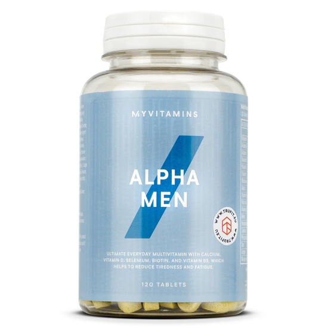

|  |
MYPROTEINAlpha Men MultivitaminSvarīgākie vitamīni un minerālvielas, kas nepieciešamas vīrieša veselībai, lai spētu uzturēt aktīvu dzīvesveidu. €17,90Size 120 tabletes 240 tabletes
1
Ielikt grozā
|
Pirkumiem virs 60€
Alpha Men Multivitamin formula ir īpaši izstrādāta fiziski aktīviem vīriešiem un to vajadzībām. Formula satur vitamīnus un minerālvielas, kas palīdzēs sasniegt treniņu mērķus. Katra tablete sniedz kalciju, D vitamīnu, selēnu, pantotēnskābi, biotīnu un enerģiju veicinošus augu ekstraktus, kas uzlabos veselību un pašsajūtu gan ikdienā, gan treniņu un fizisku aktivitāšu laikā.
Šī multivitamīnu formula sniedz dažādas organismam nepieciešamas vielas, kas sekmēs gan fizisko, gan garīgo veselību. Alpha Men Multivitamin palīdzēs būt gatavam visiem dzīves pārbaudījumiem! Tas mazina nogurumu un bezspēku un stimulē prāta darbību, kā arī stiprina imunitāti, uzlabo sirds veselību un nodrošina optimālu nervu sistēmas darbību.
Pagaidām nav neviena bieži uzdota jautājuma par šo produktu.
Jautā droši tagad!